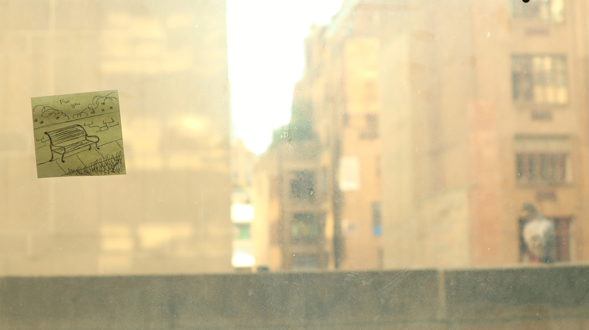
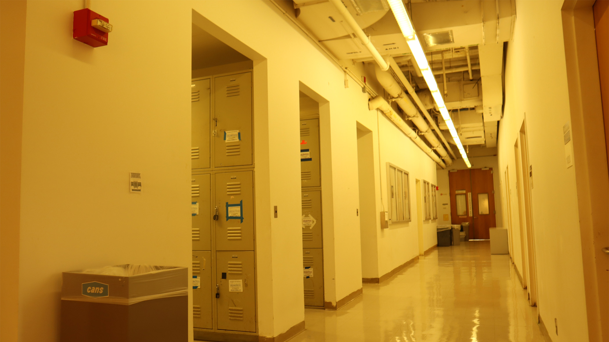
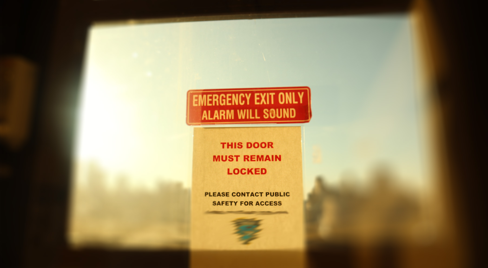

Shallow Depth of Field:
In this image, there was a pigeon in the background where I felt I had to take the picture before it flew off. Combined with the post-it with a drawing on the window, I thought it would be perfect to demonstrate the shallow depth of view.
Deep Depth of Field:
I decided to take a photo of a hallway, and what I liked about this particular hallway was the pipes at the ceiling. I think it helps to really show that deep depth of view.
Photoshopped Field Blur:
This is simply a vending maching that sells drinks with the field blur in play. I found the result of that filter to be nice since you could still tell it is a vending machine despite the heavy blur.